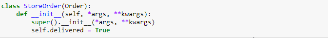

בדוגמה האחרונה במחברת הראשונה:

הייתי מוסיף פונקציה _calculate_extra_price שמחסירה מהמחיר את דמי המשלוח, או לחילופן משנה במחלקת האם את החישוב, ומוסיף לשאר המחלקות את דמי המשלוח.
לא נראה לי שמי שמגיע לחנות רוצה לשלם גם דמי משלוח
נאלצתי למחוק את כל השאלות שלא היו קשורות לאשכול.
אני מבקש לשמור על האשכול מאורגן, ולפתוח אשכול חדש אם יש לכם שאלה שקשורה למחברת או לתיקונים פה.
תודה
2 לייקים
בסופו של דבר זה עניין של המשגה ויזואלית 
חשבתי האם לשנות אחרי שהעלית, אבל אני לא מוצא ביטוי טוב יותר. אני חושב שיותר נוח להסתכל על מחלקת־העל (על == למעלה) כראש השרשרת.
לייק 1
לא דאגתי לתקן, תודה!
הוספתי, תודה!
לייק 1
מסכימה איתך.
הכל תלוי בהקשר של המילה: השרשרת, האם היא בהקשר לMRO או לסדר ירושה.
לייק 1
לא עברתי על כל השרשור ויתכן שמישהו ציין זאת אבל הורדתי את המחברת המתוקנת ולעניות דעתי יש שם שגיאה בשיכתוב של str של class Instrumental. נכתב שם:
class Instrumental(Song):
def init(self, name, artists=None):
Song.init(self, name=name, lyrics="", artists=artists)
def __str__(self):
Song.__str__(self)
artists = ', '.join(self.get_artists())
title = f'"{self.name}" / {artists}'
separator = "-" * len(title)
return f"{title}\n{separator}\nSeen: {self._views} time(s)."
אבל כל הרעיון של השימוש ב- str של Song הוא לא לכתוב פעם נוספת את 3 השורות שלפני ה-return
אינה שגיאה. המשתנים הללו לא מוגדרים בפעולה במחלקת־העל.
אם לא הבנת איך זה עובד כדאי לפתוח אשכול חדש (או לחפש את אלו הקיימים) ולהדיין על איך זה עובד
אם הקובץ הבינארי הוא מסוג תמונה, צרו עבורו הפעולה get_size
הצ"ל: צרו עבורו את הפעולה.
(לא קריטי  )
)
לייק 1
כשאתה שובב ולא מקפיד לבצע את הנחיות העורכת הלשונית כלשונן
תוקן, תודה!
(טריוויה מעניינת: דוד בן גוריון לא חשב שהמילה “את” הכרחית, יש הרבה קריאות נחמדות בנושא)
6 לייקים
משיעורי לשון בכיתה י’:
פעלים בעברית או “יוצאים” או “עומדים”.
העומדים זקוקים למילת יחס כדי לבצע את פעלם על מושא
(והמושא נקרא “מושא עקיף”).
היוצאים, לא זקוקים לעזרה של מילת יחס (- המושא של הפעולה הוא “מושא ישיר”).
כשמוסיפים יידוע (למשל “ה” הידיעה) למושא ישיר, אפשר להוסיף “את”. לא הכרחי.
בן גוריון לא השתמש בו.
(
בדוגמה של דפי פועל יוצא, עם מושא ישיר:
-צרו עבורו את הפעולה (עם יידוע של המושא)
-צרו עבורו פעולה (ובלי)
)
ניצור מופע חדש של אקרוסטיכון חדש
אחד ה"חדש"ים מיותר
סוג נוסף של ביקורת שמועברת תדירות
צריך להיות “סוג נוסף של ביקורת שמועברת תדיר”
לייק 1
בהדגמה של CrazyButton:
buy_now = CrazyButton()
buy_now.double_click()
buy_now.clicks
אני מניח שהכוונה הייתה להדגים את הפונקציה click של CrazyButton, שהיא למעשה הדריסה של פונקציית click במחלקת העל Clickable:
buy_now = CrazyButton()
buy_now.click()
buy_now.clicks
לייק 1
בתרגיל משחק המאפיה:
המשחק מסתיים בניצחון למאפיה כאשר נשארים רק שני משתתפים במשחק.
בעקרון אם היו שלושה שחקנים - שני אזרחים ורוצח - והאזרחים הצביעו נגד הרוצח, נשארו שני משתתפים אבל אין נצחון לרוצח.
כמו כן, אם נשארים שלושה שחקנים - אזרח, שוטר ורוצח - הרוצח עשוי להרוג את האזרח ואז השוטר עוצר את הרוצח. נראה לי שזה נחשב נצחון לאזרחים (אם כי, נצחון עגום)
נראה לי מאותו שורש של “לרוץ”, מן “להתבחבש”
אה…
אוי, זה רפרנס לשיר של שולי רנד, “רצוא ושוב”
לייק 1

{kind=link}
{kind=link}
{kind=link}
הפעם פחות שטויות שלי, דווקא דיברתי עברית תקינה
https://he.m.wikisource.org/wiki/קטגוריה:יחזקאל_א_יד
לפי רב מילים: “בלשון המקרא ובספרתית: הלוך וחזור (בתנועת ריצה), אנה ואנה במהירות.”
4 לייקים
זה לא כזה משנה, בשניהם נכנס למצב של open recursion ^^"
אכן. תודה! תיקנתי
לייק 1